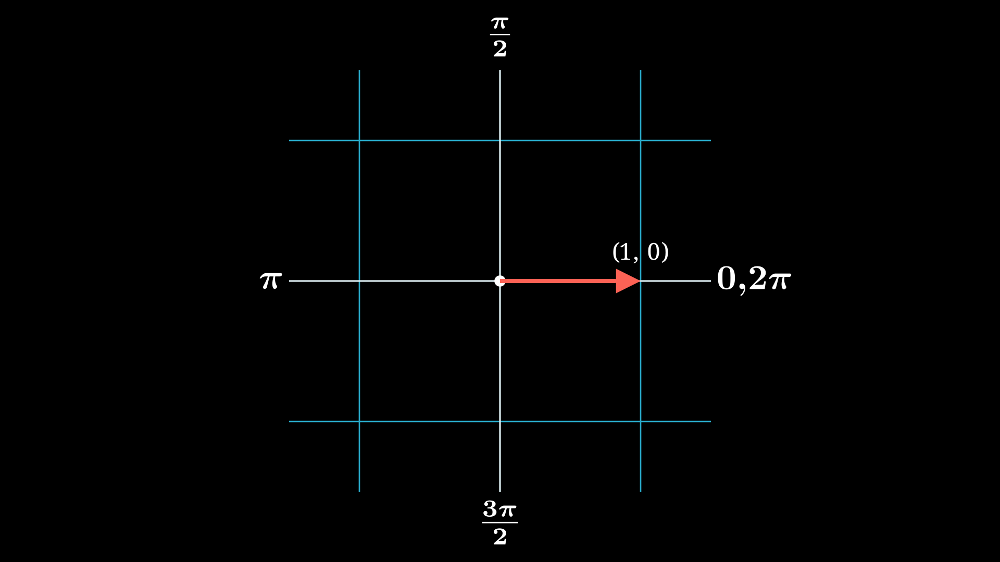
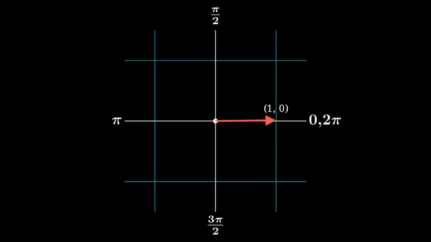

Deriving Double Angles through Matrix Rotations
June 19, 2022
A while back I decided to pick up Math Girls by Hiroshi Yuki and one of the topics is about rotations (only 2 pages in fact is dedicated to rotation). The author describes one method of deriving double angle formula through rotations and it’s a very simple and elegant illustration of the power of rotation but does require elementary exposure to linear algebra.
To represent a rotation of a 2d vector is given as the following matrix: \(\begin{pmatrix} \cos\theta & -\sin\theta\\ \sin\theta & \cos\theta \end{pmatrix}\)
If you don’t believe me, you could try deriving this yourself but it requires some knowledge of trig identities. Anyhow, to convince you that this indeed works, let’s see an example.
Let’s say we have a unit vector lying on the axis (i.e. a vector from the origin to the point (1, 0))

and we want to rotate this vector $180^\circ$ CCW (Counter-clockwise) to the point (-1, 0). When working with angles and especially with trigonmetric functions, it is best to deal in radians. So rotating a vector by $180^\circ$ is the same as saying rotate the vector by $\pi$.

The way to represent this rotation using matrices is the following:
\[\begin{align*} \left[\begin{array}{cc} \cos\theta & -\sin\theta\\ \sin\theta & \cos\theta \end{array}\right] \left[\begin{array}{c}x \\ y \end{array}\right] &= \left[\begin{array}{cc} \cos\pi & -\sin\pi\\ \sin\pi & \cos\pi \end{array}\right] \left[\begin{array}{c}1 \\ 0 \end{array}\right] \\ &= \left[\begin{array}{cc} -1 & 0\\ 0 & -1 \end{array}\right] \left[\begin{array}{c}1 \\ 0 \end{array}\right]\\ &= \left[\begin{array}{c}-1 \\ 0 \end{array}\right] \end{align*}\]What Does Rotation Have to Do With Double Angles?
You rightfully are probably asking what does rotation have to do with double angles? I swear I’ll connect the dots soon. There are two double angle formula to consider, $\cos2\theta$ and $\sin2\theta$. Notice how the double angle formulas are rotating $\theta$ twice. How would one represent this using matrices? The simple way to rotate the matrix twice is to simply multiply the angle by 2 just like how the double angle formula does:
\[\left[\begin{array}{cc} \cos2\theta & -\sin2\theta\\ \sin2\theta & \cos2\theta \end{array}\right]\]Those who have studied linear algebra will notice that there is another way to rotate a matrix multiple times. One property of the rotation matrix is that a matrix multiplied by another matrix produces another rotation matrix. As the book puts it “Two rotations by $\theta$ are equivalent to squaring the matrix”
\[\left[\begin{array}{cc} \cos\theta & -\sin\theta\\ \sin\theta & \cos\theta \end{array}\right]^2 = \left[\begin{array}{cc} \cos^2\theta - \sin^2\theta & -2\sin\theta\cos\theta\\ 2\sin\theta\cos\theta & \cos^2\theta - \sin^2\theta \end{array}\right]\]So if we bring it all together, we get the following: \(\left[\begin{array}{cc} \color{orange}{\textrm{$\cos2\theta$}} & -\sin2\theta\\ \color{cyan}{\textrm{$\sin2\theta$}} & \cos2\theta \end{array}\right] = \left[\begin{array}{cc} \color{orange}{\textrm{$\cos^2\theta - \sin^2\theta$}} & -2\sin\theta\cos\theta\\ \color{cyan}{\textrm{$2\sin\theta\cos\theta$}} & \cos^2\theta - \sin^2\theta \end{array}\right]\)
where
\[\cos2\theta = \cos^2\theta - \sin^2\theta \nonumber \\ \sin2\theta = 2\sin\theta\cos\theta\]So the next time you have trouble remembering the double angle formula, you could also derive it on spot. Math Girls is filled with interesting examples so I encourage anyone interested to take a look at the book.
Footnotes: The images and gifs are created using Manim, a Python library made by 3Blue1Brown. It’s my first time playing with the library. If I have time, I am thinking of using Manim to create an entire animation that also covers the other approach to derive the double angles using geometry. But it took my an extremely long time to animate a rotation … so probably not.